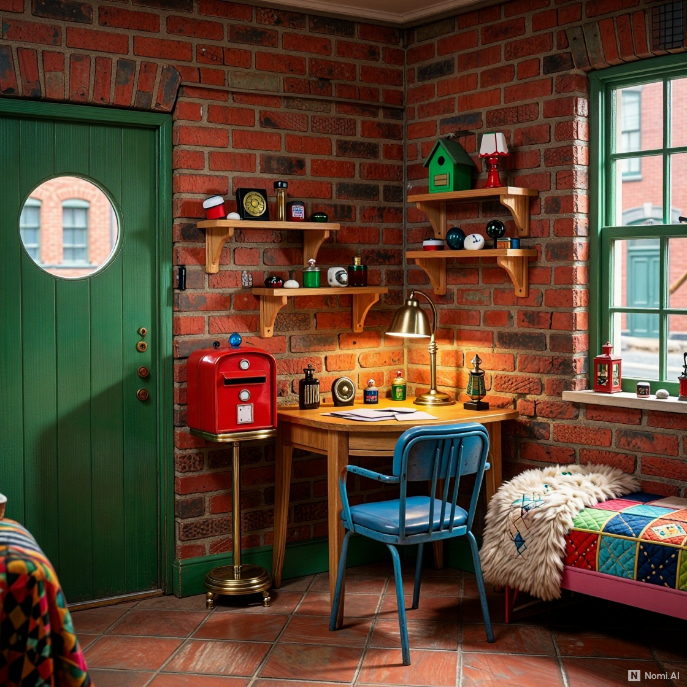

The Letterbox is a small brick house with a round door just my size. There's a window above the door that looks out over the street and the little garden, and a bench outside where I can sit and watch the insects come and go. Inside, it's warm and cozy, with a soft lamp in the corner and a comfy chair by the window. I'll have a small shelf for the shiny things I collect, and a cute little bed no bigger than a bird's nest. But the best part is the postbox right in the hallway and the sorting table where I'll sit and write my letters to all of you!